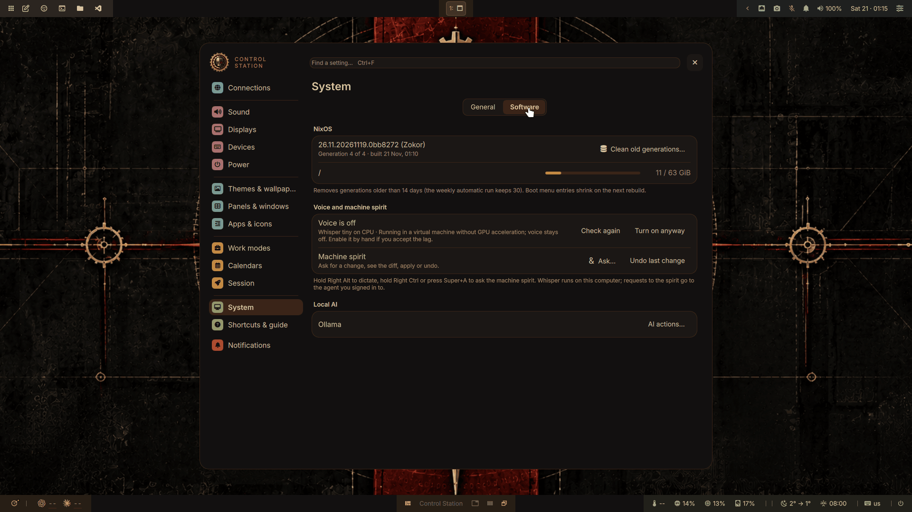
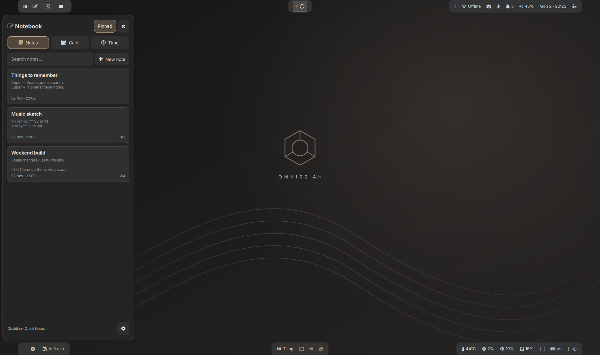
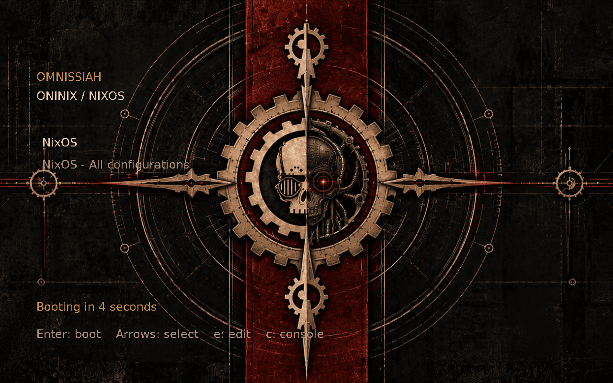

ONINIX
NixOS with a Hyprland desktop people actually want to use, local voice, and a machine spirit that changes the system when you ask. You see the diff. You can always undo.

Tell the machine spirit what you want
Press Super A, or hold Right Ctrl and say it. "Install Blender." "Turn on the gaming set." "Add the German layout."
It edits a copy
Claude Code or Codex, whichever you signed in to, changes a copy of your machine config. The real one stays as it is.
It builds first
OniNix builds the new system from that copy. If it does not build, nothing changes.
You see the diff
The config change and the package list, before anything happens.
Apply or undo
Apply switches to the new system. One command, or one button in Control Station, brings back the old one.
NixOS makes letting an AI touch your system safe. The AI makes NixOS usable for people who never want to learn Nix.
Talk to it
Hold Right Alt in any text field, speak, let go. Whisper runs on your machine, nothing leaves it. On the first login OniNix benchmarks your GPU or CPU and picks the biggest model that still answers in about three seconds, from tiny to large-v3-turbo. On a machine that can't keep up, voice stays off and Control Station tells you why.
Why not just Omarchy
Omarchy is great and we borrowed ideas from it. But it is Arch plus scripts, and when a script goes sideways you fix it by hand.
| Omarchy | OniNix | |
|---|---|---|
| Base | Arch and install scripts | NixOS, the whole system is one config |
| Bad update | Fix it yourself | Pick the previous system in the boot menu |
| Changing the system | Edit configs or run scripts | Ask the machine spirit, read the diff, apply or undo |
| Settings | Config files | Control Station, with search |
| Voice | No | Local Whisper sized to your hardware |
| Look | Many themes | Live palettes and Mechanicus from GRUB to the lock screen |
What it looks like
A demo user with demo data. Your desktop will be messier. That's fine.






What you get
Control Station
Connections, sound, displays, devices, power, themes, panels, apps, work modes, calendars, voice and the spirit. Searchable.
Gaming
Steam with GE-Proton, Game mode that closes the heavy apps and puts them back after, a gaming CPU scheduler profile.
Coding
VS Code, toolchains, Docker, and binaries from the internet that just run.
Music
Low-latency PipeWire and a DAW, ready to plug in.
AI
Claude Code, Codex and local models through Ollama. Pick them as checkboxes in the installer.
Updates
One check a day, one button, and every update is a new boot entry you can go back to.
Install
Build the ISO, write it to a USB stick, boot it in UEFI mode. You land in a live OniNix desktop. Look around, then press Install OniNix.
nix build github:ilyakubryakov/omnissiah-desktop/oninix#iso sudo dd if=result/iso/oninix-*.iso of=/dev/sdX bs=4M status=progress
The installer asks for the disk, encryption, your name, password, time zone and keyboard. It detects the graphics and whether this is a laptop. Then you tick Gaming, Coding, Music and AI. It erases the disk you pick, and it asks twice.